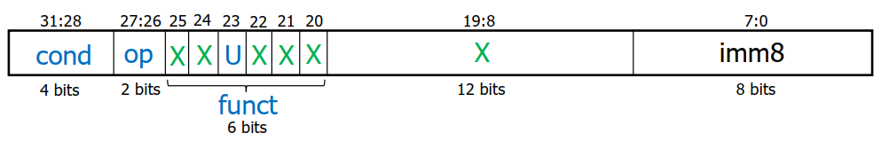

计算机组成-知识点整理（下）
Single Cycle Processor Design
Architecture vs Microarchitecture
Architecture: programmer’s view of computer
- Defined by instructions & operand locations
- Assembly language: human-readable format of instructions
- Machine language: computer-readable format (1’s and 0’s)
- Assembly language → Machine language conversion is done by the assembler
Microarchitecture: digital designer’s view of the computer
- How to implement an architecture in hardware
- Different designs possible to execute the same code
Architecture: Instruction Formats
Data-processing (DP) Instruction Formats
DP Register Operand2 Format
1 | OP{S} Rd, Rn, Rm |
Operands
- Rn: first source register
- Rm: second source register
- Rd: destination register
Control fields
- op: the operation code or opcode
- op = 0b00 for data-processing (DP) instructions
- funct is composed of cmd, I-bit, and S-bit
- cmd = 0b0000 for
AND, 0b0010 forSUB, 0b0100 forADD, 0b1100 forORR - I = immediate = 0b0 for register Operand2
- S = set flags = 0b1 if the suffix S is specified, for example,
ADDS,ANDS
- cmd = 0b0000 for
- M = 0b0
DP Immediate Operand2 Format
1 | OP{S} Rd, Rn, #imm8 |
Operands
- Rn: first source register
- imm8: 8-bit unsigned immediate
- Rd: destination register
Control fields
- op: the operation code or opcode
- op = 0b00 for data-processing (DP) instructions
- funct is composed of cmd, I-bit, and S-bit
- cmd = 0b0000 for
AND, 0b0010 forSUB, 0b0100 forADD, 0b1100 forORR - I = immediate = 0b1 for immediate Operand2
- S = set flags = 0b1 if the suffix S is specified, for example,
ADDS,ANDS
- cmd = 0b0000 for
DP Operations: cmd
| cmd | Instruction | Operation |
|---|---|---|
| 0000 | AND | Logical AND |
| 0001 | EOR | Logical Exclusive OR |
| 0010 | SUB | Subtract |
| 0011 | RSB | Reverse Subtract |
| 0100 | ADD | Add |
| 0101 | ADC | Add with Carry |
| 0110 | SBC | Subtract with Carry |
| 0111 | RSC | Reverse Subtract with Carry |
| 1000 | TST | Test Update flags after AND |
| 1001 | TEQ | Test Equivalence Update flags after EOR |
| 1010 | CMP | Compare Update flags after SUB |
| 1011 | CMN | Compare Negated Update flags after ADD |
| 1100 | ORR | Logical OR |
| 1101 | MOV | Move |
| 1110 | BIC | Bit Clear |
| 1111 | MVN | Move Not |
Note: Multiplication is not one of the 16 ALU operations, though it is considered a DP operation. Multiplication is done in a separate multiplication unit and is a bit different from other DP operations.
Multiply Instruction Format
1 | MUL Rd, Rm, Rs |
cmd = 0b0000 for
MUL, 0b0001 forMLAM =
- 0b0 → usual DP instructions such as
ADD,AND,.. - 0b1 →
MULandMLA
- 0b0 → usual DP instructions such as
MULdoes not use RnAssume
MULandMLAdoes not set any flags (S bit is 0b0) and cannot take immediate operands (I bit is 0b0)
Memory Instruction Format
1 | OP Rd, [Rn, #±imm8] |
Encodes LDR, STR
- op: 0b01 for memory instructions
- funct: 6 control bits
- U: Add
- 0b1 → offset is positive, i.e., effective address = Rn + imm8
- 0b0 → the offset is negative, i.e., effective address = Rn – imm8
- L = 0b1 for load; 0b0 for store
- P: Preindex
- W: Writeback
- PW = 0b00 → postindex 0b01 → unsupported 0b10 → offset 0b11 → preindex
- Rn: base register
- Rd: destination (load), source (store)
- imm8: magnitude of offset
Branch Instruction Format
1 | B{cond} LABEL |

Encodes B{cond}
- cond: condition to be true for the branch to be taken
- op = 0b10 for branch instructions
- imm8: 8-bit immediate encoding Branch Target Address (BTA)
- BTA = address corresponding to LABEL = Next PC when branch taken
- imm8 = # of bytes BTA is away from current PC+4
- U: add
- 0b1 → BTA = PC+4+imm8; 0b0 → BTA = PC+4-imm8
Branch Condition Codes (cond)
| cond | Mnemonic | Name |
|---|---|---|
| 0000 | EQ | Equal |
| 0001 | NE | Not equal |
| 0010 | CS / HS | Carry set / Unsigned higher or same |
| 0011 | CC / LO | Carry clear / Unsigned lower |
| 0100 | MI | Minus / Negative |
| 0101 | PL | Plus / Positive of zero |
| 0110 | VS | Overflow / Overflow set |
| 0111 | VC | No overflow / Overflow clear |
| 1000 | HI | Unsigned higher |
| 1001 | LS | Unsigned lower or same |
| 1010 | GE | Signed greater than or equal |
| 1011 | LT | Signed less than |
| 1100 | GT | Signed greater than |
| 1101 | LE | Signed less than or equal |
| 1110 | AL (or none) | Always / unconditional |
Microarchitecture
Datapath & Control Unit Design，太麻烦了，懒得整理。
Single Cycle Design Summary
Single-cycle - fetch, decode and execute each instruction in one clock cycle
- (+) simple
- (–) no datapath resource can be used more than once per instruction, so some must be duplicated
- separate memories for instruction and data
- 2 adders/ALUs
- (–) cycle time limited by longest instruction (LDR)
Cache Memory Principles
Memory Hierarchy
| Memory | Size | Cost/GB, Speed |
|---|---|---|
| M0 registers in CPU | * | ***** |
| M1 cache memories (SRAM) | ** | **** |
| M2 main memories (DRAM) | *** | *** |
| M3 disk storage | **** | ** |
| M4 tape units/optical disks, etc. | ***** | * |
Basic idea:
- Each level holds the most frequently accessed data from the immediate higher level
- Reduces the effect of lower speed of the higher level without increasing the overall cost significantly
Memory Capacity Planning
When a memory Mi is accessed and if the desired word is found, it is referred to as a hit, otherwise miss. The hit ratio (hi) is the probability that a word/information will be found when accessed in Mi. Miss ratio is 1-hi. The hit ratios at successive levels are a function of memory capacities, management policies, and program behavior. h0=0 and hn=1. This means that the CPU always access M1 first and access to the outermost level is always a hit.
Access frequency at a level i is defined as fi = (1 - h1)(1 - h2)…(1 - hi-1)hi. Note that f1 + f2 + … + fn = 1 and f1 = h1. Due to the locality property, the access frequencies decrease rapidly from the lower levels, i.e., access freq at level i is greater than i+1. This means that the inner levels are accessed more often than the outer levels.
Effective Access Time is defined as Teff = f1t1+ f2t2+… fntn where ti is the access time at level i.
The total cost of a memory hierarchy is estimated as Ctotal = c1s1+c2s2+…+cnsn where ci is the cost/MB and si is the size (in MB) at level i.
Hierarchy optimization involves minimizing Teff given Ctotal < Cmax or Ctotal given Teff < Tmax.
The optimal design should result in a Teff close to t1 and a total cost close to cn.
Cache Working Principle
Read
- When a read request is received from CPU, the contents of a block of memory words containing the location specified are transferred to the cache.
- Block is also called cache line, typically ~64 bytes
- Where to place the incoming block in the cache is decided by the mapping function
- Subsequently, when the program asks for any of the locations from this block, the desired contents are read directly from cache.
- Checking if the required data/block is present in the cache is performed by the cache controller
- If yes, a cache hit is said to occur
- When a block occupying cache is not referenced for a long time, it is pushed back to the MM to make space for another block.
- Which block to replace is decided by replacement algorithms
- When a read miss happens, the block containing the word is loaded into the cache and then the desired word is sent to the CPU.
Write
- Write-through
- In this case, the cache and MM locations are simultaneously updated
- Simple, but results in unnecessary write operations in MM when cache is updated several times
- Write-back
- Update only the cache location and mark it as updated with an associated flag bit, often called as dirty or modified bit
- The MM word is updated later, when the block containing the word is removed from the cache by a replacement algorithm
- May also lead to unnecessary write operations – when a cache block is written back to the memory, all the words of the block are written back, even if only a single word in that block was modified when it was in the cache
Mapping Techniques
The following example is used to illustrate the mapping algorithms:
- The cache consists of 128 blocks of 16 words each; a total of 2048 (2K) words
- Assume that the MM is addressable by a 16-bit word address (not byte address, for simplicity)
- MM has 64K words, which we will view as 4K blocks of 16 words each
Direct Mapping
Direct mapping: block j of MM -> block j modulo 128 of Cache.
16-bit address
- lower order -> select a word within the block
- middle order -> block number in the cache
- high order -> which of the 32blocks (4K/128 = 32 = 25) from MM is residing currently in the cache block
The tag field can be used to determine whether the block at this location is the required block – the tag field is unique for each block from MM which can be mapped to the same block in the cache. Note that even when the cache is not full, contention
may arise for a location. In this case, the replacement algorithm is trivial (a main memory block is mapped to a unique cache block).
Note: Word access within the block is not shown.
Associative Mapping
In this technique, a block of MM can be placed anywhere in the cache.
From the CPU generated address, the higher order 12 bits are stored along with the block in the cache (which makes sense as each cache block can be from any of the 4096 = 212 MM blocks).
When the request arrives, the tag field is compared for all the blocks in the cache to see if there is a match.
This technique gives a complete freedom in choosing where in the cache a particular MM block is placed. Cache space is utilized more efficiently.
Disadvantage: search 128 blocks to match for a single tag.
Set-Associative Mapping
This is a combination of previous techniques.
Blocks of cache are grouped into sets, and the mapping allows a block of the MM to reside in any block within a specific set (there is associativity within a set).
- The contention problem of the direct method is eased by having a few choices for block placement.
- The hardware cost is reduced and speed is increased by decreasing the size of the associative search procedure.
- If there are N blocks per set, the memory is called N-way set associative.
Suppose if we allow two blocks per set in the cache. The memory blocks 0,64,128,…,4032 map into cache set 0, and they can occupy either of the two block positions within the set.
With 128 cache blocks and 2 blocks per set, we have 64 sets -> we need 6 bits to identify the right set and 4 bits for a word, leaving 6 bits for the Tag field (which makes sense as each cache block can be from any of the 4096/64 = 64 = 26 MM blocks).
Note: Word access within the block is not shown.
Replacement Algorithms
In the case of associative and set-associative mapping, there is some flexibility in deciding which block should be thrown out if a new block is brought into the cache.
- First-In-First-Out
- Replace the oldest block in the memory
- Least Recently Used (LRU)
- Replace the block that has not been referenced for a long time
- Optimal Algorithm (Ideal - assumes knowing the future)
- Replace the block that will not be used for a longest period of time
- Cannot be implemented in practice, used only for analysis purpose
Multilevel Caches
Larger caches have lower miss rates, but longer access times.
Most modern PCs have L1, L2, and L3 cache.
Pipelining Basics
Single Cycle Disadvantages:
- Uses the clock cycle inefficiently – the clock cycle must be timed to accommodate the slowest instruction. It is especially problematic for more complex instructions like floating point multiply
- May be wasteful of area since some functional units (e.g., adders) must be duplicated since they can not be shared during a clock cycle
Pipelining – most modern processors are pipelined for performance.
Pipelines are used to allow overlapping execution of multiple instructions with the same circuitry. The circuitry is usually divided up into stages and each stage processes a specific part of one instruction at a time, passing the partial results to the next stage.
Under ideal conditions and with a large number of instructions, the speedup from pipelining is approximately equal to the number of pipe stages.
Pipelining doesn’t help latency of single task, it helps throughput of entire workload.
Potential speedup: once the pipeline is full, one instruction completes every cycle, at a higher clock frequency.
Pipeline rate limited by slowest pipeline stage.
The Five Stages of Instruction
- Fetch: Instruction Fetch and Update PC
- Decode: Registers Fetch and Instruction Decode
- Execute: Execute DP-type; calculate memory address
- Memory: Read/write the data from/to the Data Memory
- WriteBack: Write the result data into the register file
Pipelined Processor
Pipeline Hazards
Structural hazards: attempt to use the same resource by two different instructions at the same time
Data hazards: attempt to use data before it is ready
- Insert NOPs in code at compile time
- Rearrange code at compile time
- Stall the processor at run time
- Forward data at run time
Control hazards: attempt to make a decision about program control flow before the condition has been evaluated and the new PC target address calculated
Stall until branch decision and BTA are available
Early BTA - move decision point as early in the pipeline as possible, thereby reducing the number of stall cycles
Branch prediction
……
Control hazards occur less frequently than data hazards, but are (much) harder to deal with than data hazards.
整理自 NUS CG2028 课件，难免有错漏并存在简化的地方，仅作参考。
 wechat
wechat alipay
alipay